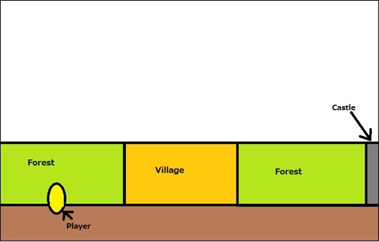
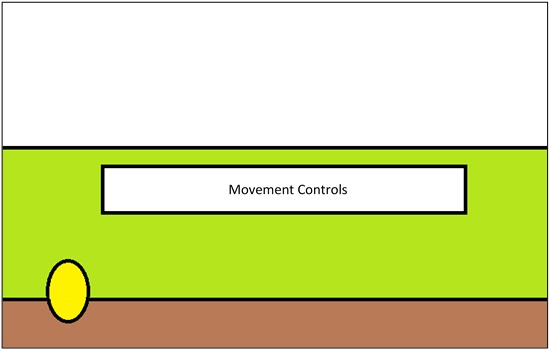
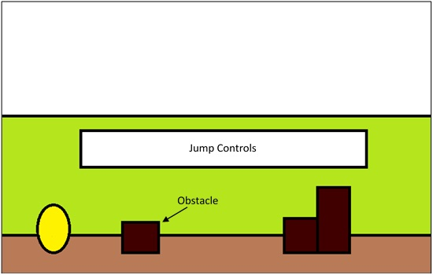
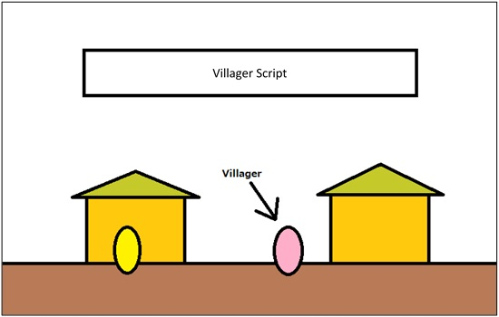
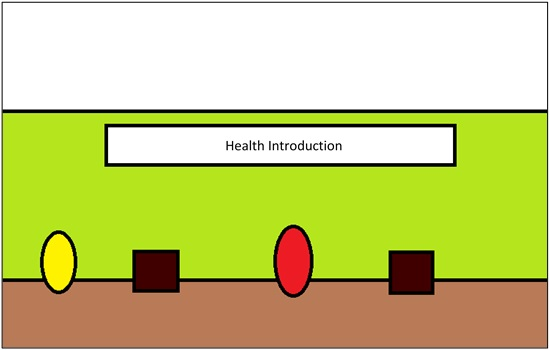
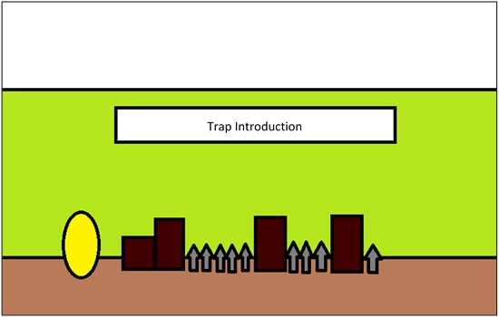
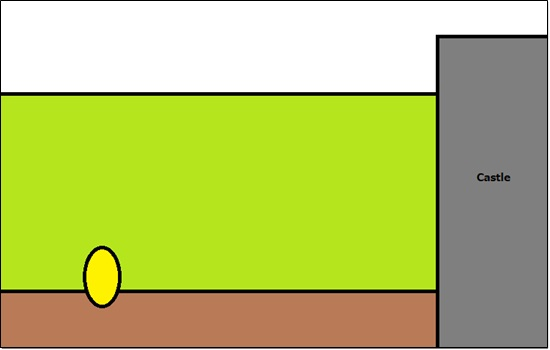

The tutorial is the introductory level to the game. It is used to introduce the player to the mechanics so they can become familiar with them. The player, as they run through the tutorial, will encounter each mechanic and be given a short description to how it works. The player will encounter the mechanics throughout the tutorial but only be introduced to one at a time.
The order that mechanics are introduced in is:
The mechanics are ordered this way as they build off each other to form the core gameplay. The health mechanic, and therefore the death mechanic, are also introduced with the first encounter of enemies as this is the first time they could be encountered.
Village Concept
The tutorial starts off by showing the first objective to reach, the village, before panning over to the player starting in the forest to the left of the village. The player is then shown how to move and makes their way to the village. Before they make it there, they encounter obstacles that require jumping over. After this, the player makes it to the village where they are told why the character is there, shown the castle, and warning of danger going forward. The player continues forward and encounters the first enemy. Just before reaching the castle, the player gets introduced to traps. Once the player reaches the castle, the tutorial is finished.
As a player, I want to know the story so that I understand why the character is here.
As a player, I want to be shown the mechanics so that I understand how to interact with them.
Layout of the tutorial
Introduce moving
Introduce jumping
Player makes it to the village
Introduce enemies

Introduce Health
Introduce traps
Tutorial end
Scenario 1: Player starts tutorial
Given I’m a player starting the tutorial, when I spawn in, the game shows me how to interact with the game and when I encounter a new mechanic, the game shows me how it works.
Scenario 2: Player reaches village
Given I’m a player in the tutorial, when I reach the village, the game tells me the reason why the character is here.